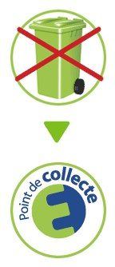

Histoire d'ecotaxe dans une PME
This post was originally written in French.
L'histoire du jour: L'Ecotaxe.

Définition: L'écotaxe est une éco-contribution qui est appliquée aux appareils fonctionnant avec des courants électriques ou des champs électromagnétiques. Elle est payée par le fabriquant du produit, et est destinée à financer en partie son traitement en tant que déchet (DEEE) et son recyclage. Dans la plupart des cas, le fabricant va la reporter aux clients. Son montant est fixé selon sa "nuisance écologique". Le fabricant choisit l'organisme auquel il va reverser l'éco-participation.
D'abord, première constation, l'écotaxe est rentrée en vigueur en novembre 2006. On est en février 2007 et dans notre PME, on agit. Les PME sont lentes et peu réactives? Non, les PME ne sont pas forcément au courant ou mal mises au courant.
Ensuite, voilà ce que cela implique dans une PME. D'abord, on lit et on comprend le concept. Ensuite, on demande au comptable s'il est courant. Bof pas tellement, mais un peu quand même. Bref pas plus que nous. On prend contact avec les organismes, afin d'en choisir un. Dans une PME, on est pragmatique, on prend le plus proche. Ca, ca va vite.
Mais ce n'est pas fini, car il faut faire apparaître l'écotaxe sur les factures. Donc on regarde si c'est possible dans le soft de gestion. Et forcément, c'est possible, et c'est prévu par le fournisseur (API dans ce cas-ci), sous forme d'une option. Une option, accompagnée de son lot de configurations à réaliser par notre consultant spécialiste adoré.
Bref, probablement 1.000 EUR de frais de soft et de config, plus le temps perdu (oh pardon, de temps gagné pour la planète). Allez, 1.500 EUR en gros ...
D'un autre côté, on va quand même facturer 0,84 EUR HT d'écotaxe par appareil vendus. Soit sur 200 appareils produits par an, environ 210 EUR d'écotaxe annuelle.
Hé oui, c'est cà l'ecotaxe dans les PME. On finance du soft et de la consultance pour mettre en place une écotaxe qui ne vaudra le montant de l'investissement de la mise en place que 7 ans plus tard! Franchement, je préfère verser les 1.500 EUR directement à un organisme non?